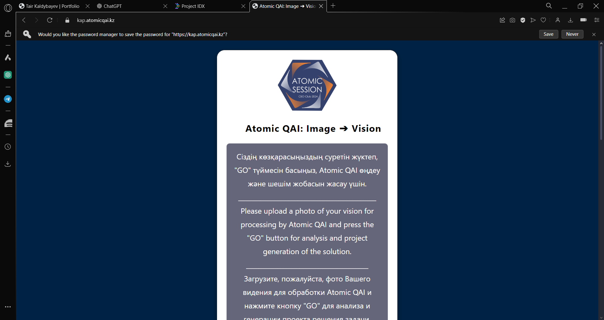
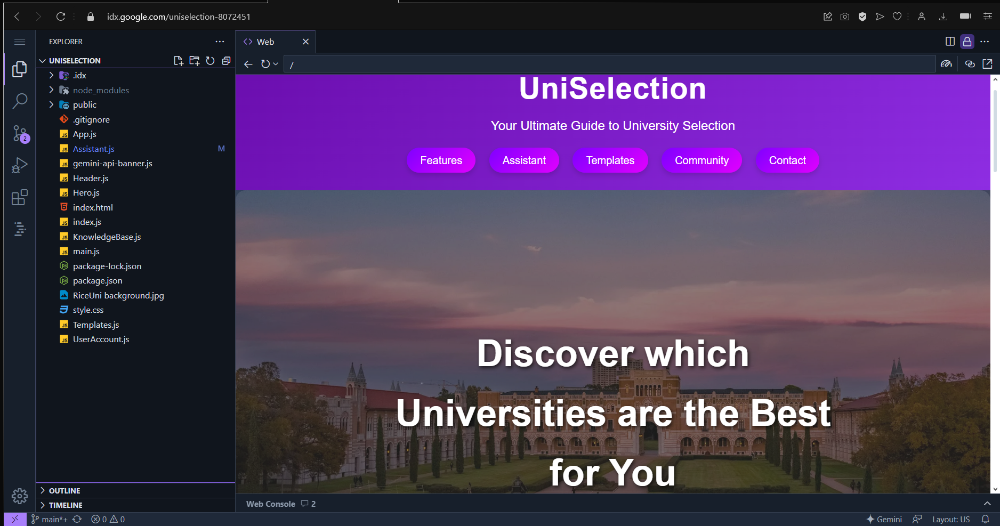
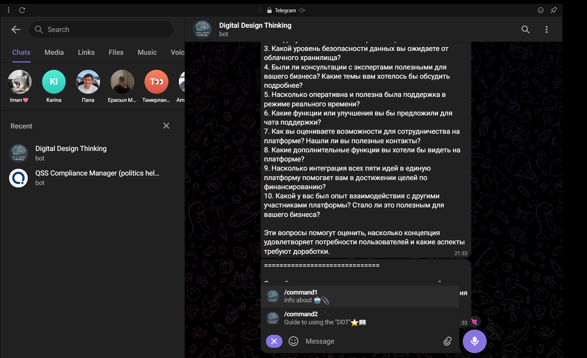
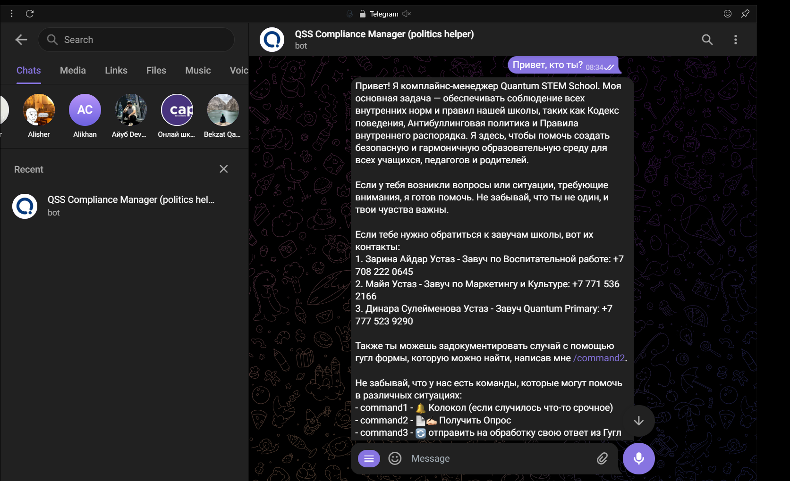
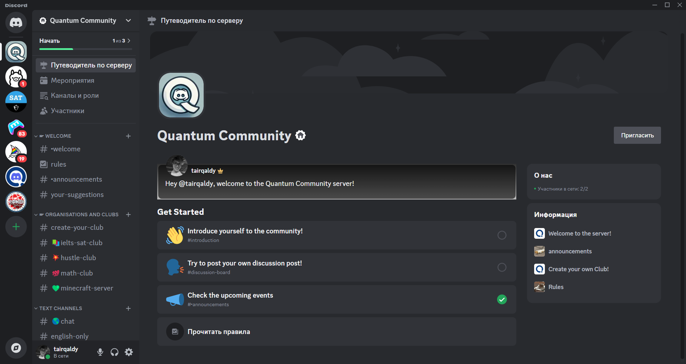

Projects
AtomicQAI ✅
Developed AtomicQAI, a web application tool for conducting strategic sessions for KazAtomProm, Kazakhstan’s national atomic company and one of the world's largest natural uranium producers. AtomicQAI facilitates effective strategic planning and decision-making processes, contributing to the company's operational excellence and resource management. Visit AtomicQAI (Private Website)
UniSelection
Developed the UniSelection tool, an intelligent platform that assists students in selecting the right universities based on their academic performance, interests, and career aspirations. This tool has streamlined the university selection process for thousands of students, ensuring better alignment with their goals.
- Technologies: React, Node.js, Real-time API usage
- Impact: Improved university alignment for 1000+ students
- View on GitHub
Digital Design Thinking Bot ✅
Created Digital Design Thinking Bot to conduct automated educational sessions for the Academy of State Administration of Kazakhstan on Design Thinking. @DigitalDesignThinking_bot
QSS Compliance Manager ✅
Designed the QSS Compliance Manager, a Telegram bot that documents bullying incidents and alerts school administration to prevent rule violations and support student wellbeing. This tool has fostered safer school environments by ensuring timely intervention and promoting a culture of respect and support. @MentalSupportQSSBot
Quantum Community Discord ✅
Created Quantum Community Discord Server, an online platform that helps students through their academic journey, providing comprehensive support and offering an interactive and supportive learning environment.
UniPath (in progress)

Creating UniPath, a gamified online platform that guides high school students through their academic journey, providing comprehensive support and resources to secure admissions into prestigious universities. UniPath has enhanced student engagement and increased university acceptance rates by offering an interactive and supportive learning environment.